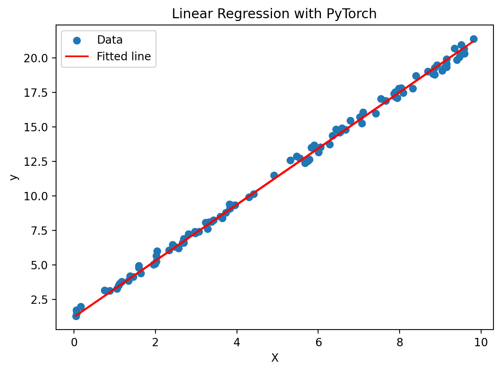

PyTorch in 7 Days: Day 1 - Introduction to PyTorch & Tensor Operations
PyTorch is an open-source machine learning library developed by Facebook's AI Research lab. It's popular due to its dynamic computational graph, ease of use, and strong community support.
Let's start by importing PyTorch:
import torch
print(f"PyTorch version: {torch.__version__}")
PyTorch version: 2.4.0
Introduction to Tensors: Creation, Data Types, and Shapes
Tensors are the fundamental data structure in PyTorch. They're similar to NumPy arrays but can be used on GPUs for faster computations.
# Creating tensors
scalar = torch.tensor(3.14)
vector = torch.tensor([1, 2, 3])
matrix = torch.tensor([[1, 2], [3, 4]])
tensor_3d = torch.tensor([[[1, 2], [3, 4]], [[5, 6], [7, 8]]])
print(f"Scalar: {scalar}")
print(f"Vector: {vector}")
print(f"Matrix: {matrix}")
print(f"3D Tensor: {tensor_3d}")
Scalar: 3.140000104904175
Vector: tensor([1, 2, 3])
Matrix: tensor([[1, 2],
[3, 4]])
3D Tensor: tensor([[[1, 2],
[3, 4]],
[[5, 6],
[7, 8]]])
# Data types
float_tensor = torch.tensor([1.0, 2.0, 3.0])
int_tensor = torch.tensor([1, 2, 3], dtype=torch.int32)
bool_tensor = torch.tensor([True, False, True])
print(f"\nFloat tensor: {float_tensor.dtype}")
print(f"Integer tensor: {int_tensor.dtype}")
print(f"Boolean tensor: {bool_tensor.dtype}")
# Shapes
print(f"\nVector shape: {vector.shape}")
print(f"Matrix shape: {matrix.shape}")
print(f"3D Tensor shape: {tensor_3d.shape}")
Float tensor: torch.float32
Integer tensor: torch.int32
Boolean tensor: torch.bool
Vector shape: torch.Size([3])
Matrix shape: torch.Size([2, 2])
3D Tensor shape: torch.Size([2, 2, 2])
Basic Tensor Operations: Arithmetic, Indexing, Slicing, Reshaping
# Arithmetic operations
a = torch.tensor([1, 2, 3])
b = torch.tensor([4, 5, 6])
print(f"a + b: {a + b}")
print(f"a * b: {a * b}")
print(f"a / b: {a / b}")
# Indexing and slicing
c = torch.tensor([[1, 2, 3], [4, 5, 6], [7, 8, 9]])
print(f"\nFirst row of c: {c[0]}")
print(f"Element at position (1, 2): {c[1, 2]}")
print(f"First two rows, all columns: \n{c[:2, :]}")
# Reshaping
d = torch.tensor([1, 2, 3, 4, 5, 6])
reshaped = d.reshape(2, 3)
print(f"\nOriginal tensor: {d}")
print(f"Reshaped tensor: \n{reshaped}")
# View operation (creates a new view of the same data)
viewed = d.view(3, 2)
print(f"Viewed tensor: \n{viewed}")
a + b: tensor([5, 7, 9])
a * b: tensor([ 4, 10, 18])
a / b: tensor([0.2500, 0.4000, 0.5000])
First row of c: tensor([1, 2, 3])
Element at position (1, 2): 6
First two rows, all columns:
tensor([[1, 2, 3],
[4, 5, 6]])
Original tensor: tensor([1, 2, 3, 4, 5, 6])
Reshaped tensor:
tensor([[1, 2, 3],
[4, 5, 6]])
Viewed tensor:
tensor([[1, 2],
[3, 4],
[5, 6]])
Project: Simple Linear Regression
Let's implement a simple linear regression model from scratch using PyTorch tensors and automatic differentiation.
Int this mini-project, we will learn how to: - Create tensors for input data and target values - Initialize parameters with requires_grad=True for automatic differentiation - Implement a simple training loop with forward pass, loss computation, and backward pass - Update parameters using gradient descent - Visualize the results
If all goes well, the loss should decrease with every epoch, and the model should learn to approximate the line y = 2x + 1 + noise.
import torch
import matplotlib.pyplot as plt
import matplotlib_inline
matplotlib_inline.backend_inline.set_matplotlib_formats("retina")
# Generate synthetic data
torch.manual_seed(42)
X = torch.rand(100, 1) * 10 # Uniformly distributed between 0 and 10
y = 2 * X + 1 + torch.rand(100, 1) # y = 2X + 1 + noise
# Initialize parameters
# requires_grad=True is needed to compute gradients automatically
w = torch.randn(1, requires_grad=True)
b = torch.randn(1, requires_grad=True)
# Hyperparameters
learning_rate = 0.001
n_epochs = 1000
# Training loop
for epoch in range(n_epochs):
# Forward pass
y_pred = w * X + b
# Compute loss: Mean Squared Error
loss = torch.mean((y_pred - y) ** 2)
# Backward pass: Compute gradients
loss.backward()
# Update parameters: Gradient Descent
with torch.no_grad():
w -= learning_rate * w.grad
b -= learning_rate * b.grad
# Reset gradients
# why? Because PyTorch accumulates gradients by default.
# We need to clear them out before computing the gradients for the next batch.
w.grad.zero_()
b.grad.zero_()
if epoch % 100 == 0:
print(f"Epoch {epoch}, Loss: {loss.item():.4f}")
print(f"\nFinal parameters: w = {w.item():.4f}, b = {b.item():.4f}")
# Plot results
plt.scatter(X.numpy(), y.numpy(), label="Data")
plt.plot(
X.numpy(), (w * X + b).detach().numpy(), color="red", label="Fitted line"
)
plt.legend()
plt.xlabel("X")
plt.ylabel("y")
plt.title("Linear Regression with PyTorch")
plt.tight_layout()
plt.show()
Epoch 0, Loss: 267.3335
Epoch 100, Loss: 0.0936
Epoch 200, Loss: 0.0918
Epoch 300, Loss: 0.0902
Epoch 400, Loss: 0.0888
Epoch 500, Loss: 0.0875
Epoch 600, Loss: 0.0863
Epoch 700, Loss: 0.0853
Epoch 800, Loss: 0.0843
Epoch 900, Loss: 0.0834
Final parameters: w = 2.0376, b = 1.2202
